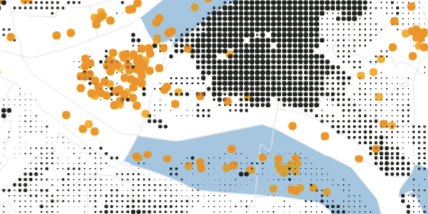
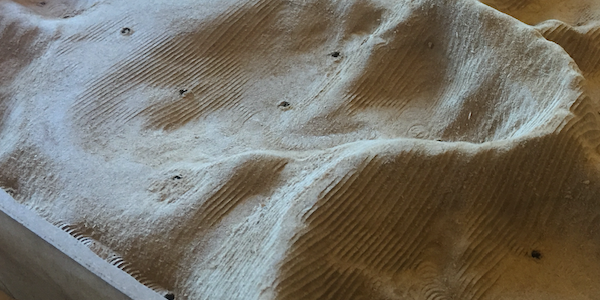
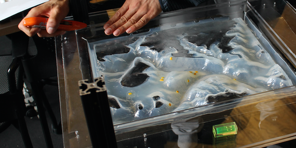
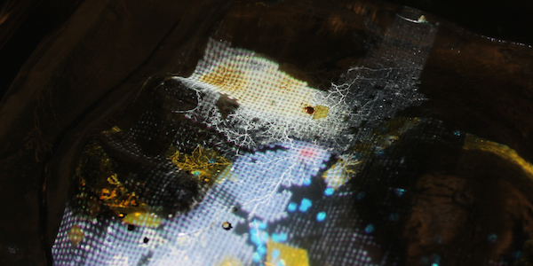
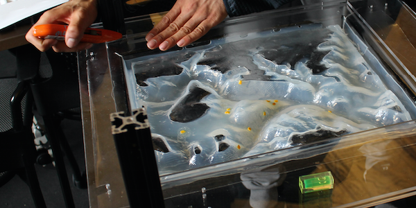
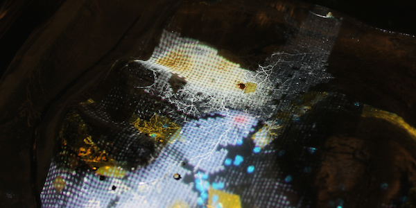
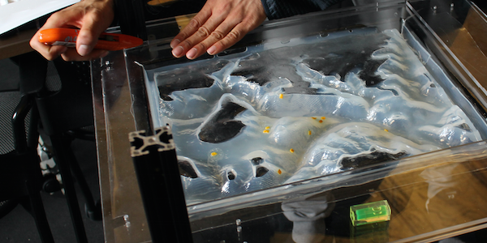
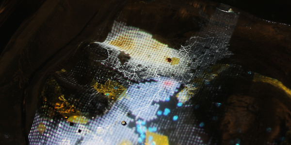

 





Culture Clash
Project Type:
Interactive Physical Data Visualization
Tools Used:
- D3.js
- node.js
- Makeblock X-Y Plotter
- CNC Router
- PETG Vacuum Former
- maptastic.js
Year:
2016
Project Description:
This project was a collaboration with Aman Tiwari in Dana Cupkova's Ecologics class. During the class we explored themes of parametric design and biomimicry, and we created this visualization as a culmination of our semester efforts. We were interested in the local cultural dynamics of the Pittsburgh technology/startup scene, and wanted to explore how use of visualization and biological metaphor can create dialogue and reflection about the relationship between the tech community and other social ecology of Pittsburgh.